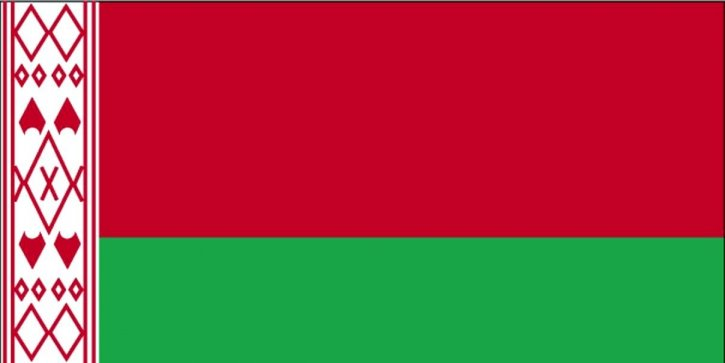
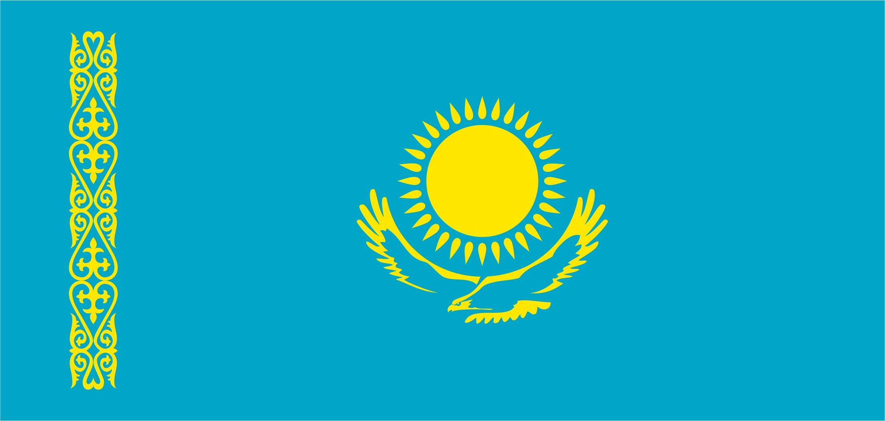
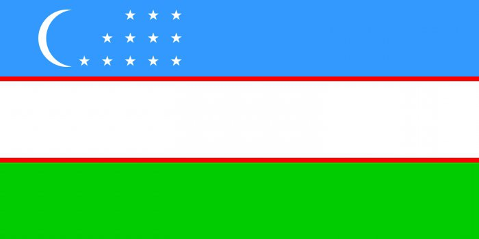

| Russia | Ukraine | Belarus | Kazakhstan | Uzbekistan |
|---|---|---|---|---|
|
Shchi
Shchi is a typical cabbage soup made from either fresh or fermented cabbage. While different recipes call for various ingredients, shchi often contains potatoes, carrots, onions, and possibly some type of meat such as chicken. The cabbage can also be replaced with sauerkraut, which is then called sour shchi. |
Borscht
Borscht is a beet soup that originated in the Ukraine and was quickly adopted as a Russian specialty as well. Beets may seem like a strange base for soup to many Westerners, but there are plenty of reasons that this hearty soup is one of Russia’s most famous dishes. It is full of meat and sautéed vegetables, including cabbage, carrots, onions, and potatoes. It can be served hot or cold, and is best served with a dollop of fresh sour cream on top. |
Draniki
These hot potato pancakes benefit from the addition of grated onion and a dollop of sour cream. It’s best to use a really starchy potato to limit the amount of liquid – you’ll want them as crispy as you can get them! |
Beshbarmak
Beshbarmak means “Five Fingers” in almost all of the Turkic languages. It used to be a traditional dish for many nomadic ethnicities. Hence, you will find Beshbarmak in almost all of the Central Asian countries. Mainly though, Beshbarmak became a national dish of Kazakhstan. It is known under similar names in the bordering countries. |
Plov
Plov is the ultimate Uzbekistan comfort food. It’s a one pot chicken and rice recipe that is packed with flavors and spices and just takes a few steps to reach ultimate rice perfection. Perfect rice and tender chicken that beg you for just another bite. Plus it’s SUPER freezer friendly! How awesome is that! |
| Population | ||||

146 171 015 |

41 902 416 |

9 413 446 |

18 897 898 |

34 036 800 |